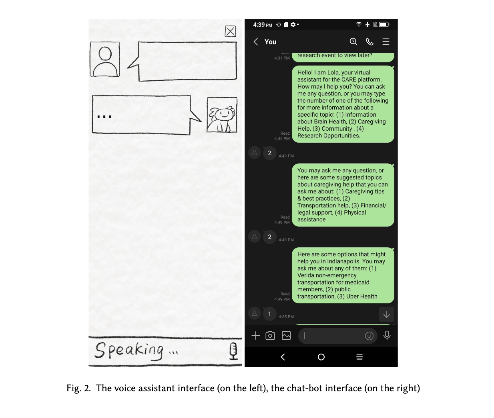
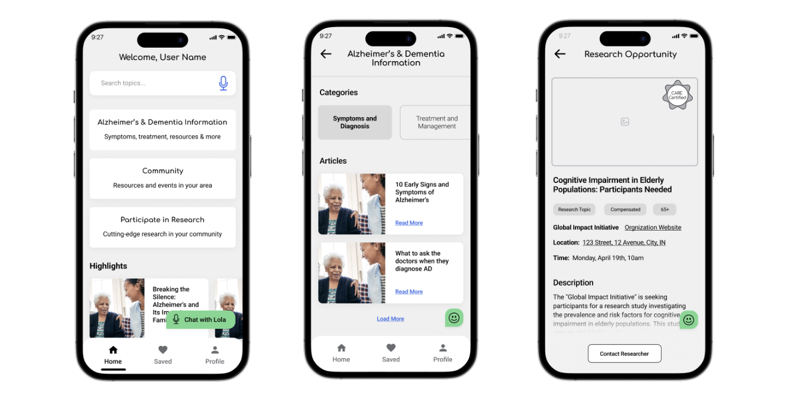

Lola the chatbot
Investigating key design elements for elderly in LLM-powered chatbot
NIH funded

Fig1. Wizard of Oz testing in Indy
Community Engagement
Considering the community that we engage with has the nature of intrusiveness toward medical related research and the history of unfair treatment in the experiment, we aim to build long-term collaborative relationship with the selected communities. Bearing RQ2 in mind, we purposed two community engagement principles:
sustained engagement and participatory culture
transparency and trust
trusted, renowned community members as third party
Participantory Design
In collaboration with our project's Advisory Board, we conducted sessions aimed at discussing both interview findings and the participants' lived experiences. This encompassed their understanding of community norms and their expertise in ADRD. These sessions were instrumental in brainstorming and prioritizing ideas, culminating in the selection of a topic for a research literacy video.
Wizard of Oz

Following the creation of an initial design mock-up of the CARE App based on our findings from previous phases, we conducted a Wizard of Oz experiment to evaluate the preliminary feasibility of the CARE App. From the participants' feedback and envision, we envision that the system has hybrid interaction wethods, which are app-based, voice-based chatbot, and also ChatGPT like text-based virual assistant.
Cognitive Walkthrough

Based on the feedback from the participants, we redesign the UI layout to satisfy their conception toward application. We also simplify the structure of the application workflow. Besides changing the application, we deploy the whole app, and also engineer a a working chatbot prototype.
Result and discussion
Accessibility in AI-infused platform designWhen developing related features with the older adults, somethings keep in mind is always the accessibility. Many older adults have issue regarding aging, and they need extra support from the system. We noticed that most of our participant would rather speak it than type it.
Medical LiteracyMost of our participants were not that tech-savvy, along not that literacy. The elderly has average less attention can use for a long time to focus, so it will be hard for them to understand a long sentence that is full of quirky professional medical words.
Cultural RelevanceFor African American elderly people, something that belongs to that specific community, which means use general model that is trained on the normal data on the internet may not satisfy the specific population's need. Even, misunderstanding might happened. In our study, our participants' understanding toward the term "Community" have different perception toward our intention
Submission